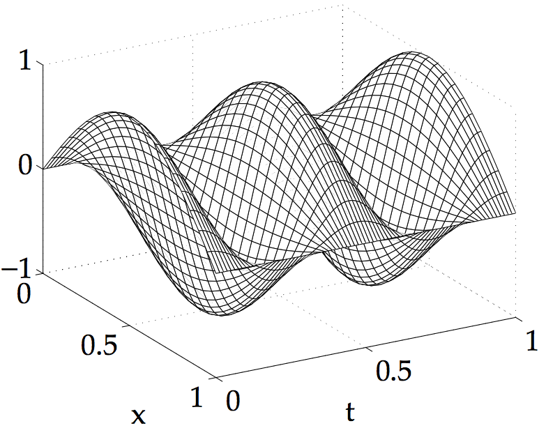
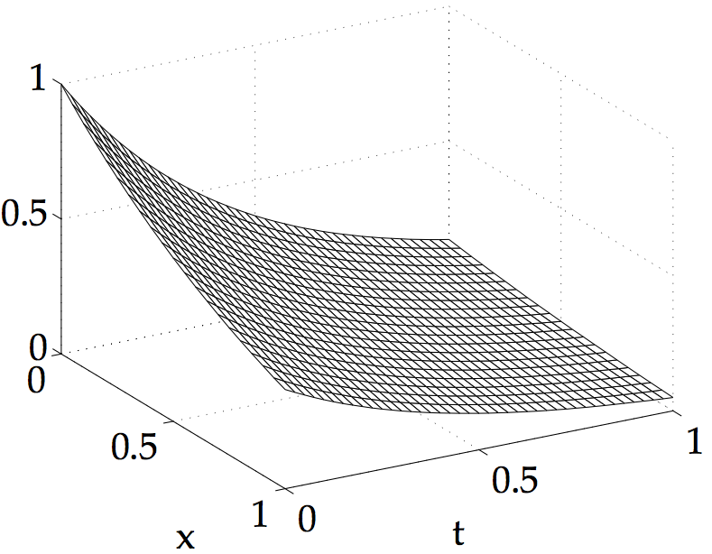
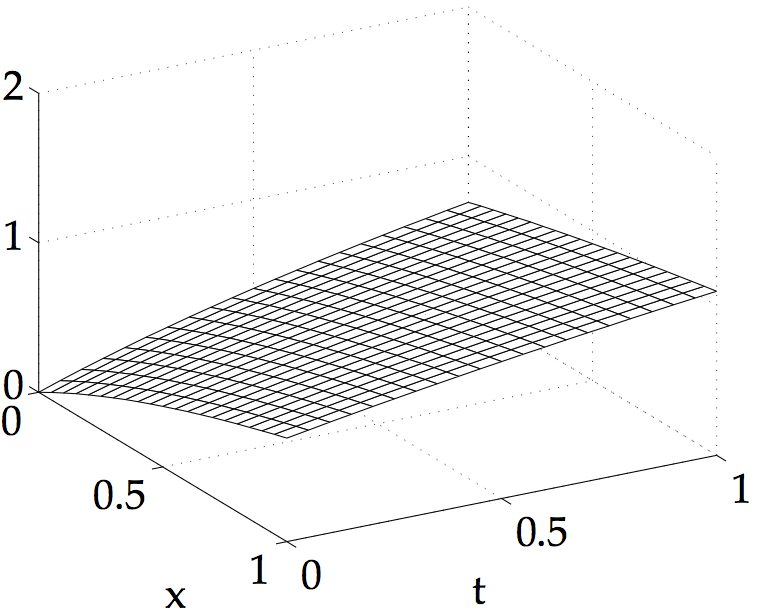

COMPUTER PROBLEMS 8.2
\(\def\ds{\displaystyle} \)
1
Set \(\sigma=ck/h\), where \(h=0.05\) and \(k=h/c\) to satisfy the CFL
condition. Plotting the solution with
the plot_surface command gives the following for (a), (b), and (c), respectively.



3
Using the iteration (8.34), the value of the wave equation solution
at \((1/4,3/4)\) at the given step sizes are as follows.
\[\text{(a)}\ \ \ \
\begin{array}{ccc}
h&k&w(1/4,3/4)&\text{error}\\
2^{-4}&2^{-6}& -0.70710678& 0.0\\
2^{-5}&2^{-7}& -0.70710678& 0.0\\
2^{-6}&2^{-8}& -0.70710678& 0.0\\
2^{-7}&2^{-9}& -0.70710678& 0.0\\
2^{-8}&2^{-10}& -0.70710678& 0.0\\
\end{array}\ \ \
\text{(b)}\ \ \ \
\begin{array}{ccc}
h&k&w(1/4,3/4)&\text{error}\\
2^{-4}&2^{-5}& 0.17367424& 0.00009971\\
2^{-5}&2^{-6}& 0.17374901& 0.00002493\\
2^{-6}&2^{-7}& 0.17376771& 0.00000623\\
2^{-7}&2^{-8}& 0.17377238& 0.00000156\\
2^{-8}&2^{-9}& 0.17377355& 0.00000039\\
\end{array}
\]
\[
\text{(c)}\ \ \ \
\begin{array}{ccc}
h&k&w(1/4,3/4)&\text{error}\\
2^{-4}&2^{-4}& 0.69308400& 0.00006318\\
2^{-5}&2^{-5}& 0.69313136& 0.00001582\\
2^{-6}&2^{-6}& 0.69314323& 0.00000396\\
2^{-7}&2^{-7}& 0.69314619& 0.00000099\\
2^{-8}&2^{-8}& 0.69314693& 0.00000025\\
\end{array}\ \ \
\]